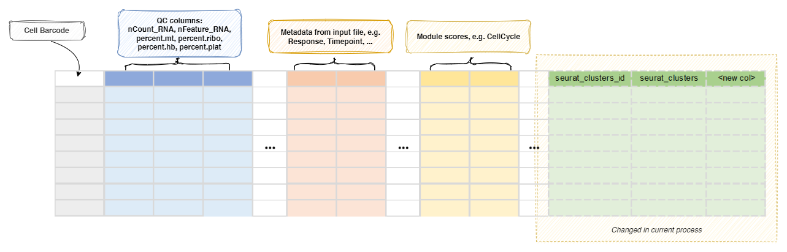

CellTypeAnnotation¶
Annotate all or selected T/B cell clusters.
Annotate the cell clusters. Currently, four ways are supported:
The annotated cell types will replace the original seurat_clusters column in the metadata,
so that the downstream processes will use the annotated cell types.
The old seurat_clusters column will be renamed to seurat_clusters_id.
If you are using ScType, scCATCH, or hitype, a text file containing the mapping from
the old seurat_clusters to the new cell types will be generated and saved to
cluster2celltype.tsv under <workdir>/<pipline_name>/CellTypeAnnotation/0/output/.
The <workdir> is typically ./.pipen and the <pipline_name> is Immunopipe
by default.
Note
When supervised clustering SeuratMap2Ref is used, this
process will be ignored.
Note
When cell types are annotated, the old seurat_clusters column will be renamed
to seurat_clusters_id, and the new seurat_clusters column will be added.
Input¶
sobjfile: The single-cell object in RDS/qs/qs2/h5ad format.
Output¶
outfile: Default:{{in.sobjfile | stem}}.annotated.{{- ext0(in.sobjfile) if envs.outtype == 'input' else envs.outtype -}}.
The rds/qs/qs2/h5ad file of seurat object with cell type annotated.
A text file containing the mapping from the oldseurat_clustersto the new cell types will be generated and saved tocluster2celltype.tsvunder the job output directory.
Environment Variables¶
tool(choice): Default:direct.
The tool to use for cell type annotation.sctype: UsescTypeto annotate cell types.
See https://github.com/IanevskiAleksandr/sc-typehitype: Usehitypeto annotate cell types.
See https://github.com/pwwang/hitypesccatch: UsescCATCHto annotate cell types.
See https://github.com/ZJUFanLab/scCATCHcelltypist: Usecelltypistto annotate cell types.
See https://github.com/Teichlab/celltypistdirect: Directly assign cell types
sctype_tissue: The tissue to use forsctype.
Avaiable tissues should be the first column (tissueType) ofsctype_db.
If not specified, all rows insctype_dbwill be used.sctype_db: The database to use for sctype.
Check examples at https://github.com/IanevskiAleksandr/sc-type/blob/master/ScTypeDB_full.xlsxhitype_tissue: The tissue to use forhitype.
Avaiable tissues should be the first column (tissueType) ofhitype_db.
If not specified, all rows inhitype_dbwill be used.hitype_db: The database to use for hitype.
Compatible withsctype_db.
See also https://pwwang.github.io/hitype/articles/prepare-gene-sets.html You can also use built-in databases, includinghitypedb_short,hitypedb_full, andhitypedb_pbmc3k.-
cell_types(list): Default:[].
The cell types to use for direct annotation.
You can use"-"or""as the placeholder for the clusters that you want to keep the original cell types (seurat_clusters).
If the length ofcell_typesis shorter than the number of clusters, the remaining clusters will be kept as the original cell types.
You can also useNAto remove the clusters from downstream analysis. This only works whenenvs.newcolis not specified.Note
If
toolisdirectandcell_typesis not specified or an empty list, the original cell types will be kept and nothing will be changed. -
more_cell_types(type=json): The additional cell type annotations to add to the metadata.
The keys are the new column names and the values are the cell types lists.
The cell type lists work the same ascell_typesabove.
This is useful when you want to keep multiple annotations of cell types. -
sccatch_args(ns): The arguments forscCATCH::findmarkergene()iftoolissccatch.species: The specie of cells.cancer: Default:Normal.
If the sample is from cancer tissue, then the cancer type may be defined.tissue: Tissue origin of cells must be defined.marker: The marker genes for cell type identification.if_use_custom_marker(flag): Default:False.
Whether to use custom marker genes. IfTrue, nospecies,cancer, andtissueare needed.<more>: Other arguments forscCATCH::findmarkergene().
You can pass an RDS file tosccatch_args.markerto work as custom marker. If so,if_use_custom_markerwill be set toTRUEautomatically.
celltypist_args(ns): The arguments forcelltypist::celltypist()iftooliscelltypist.model: The path to model file.python: Default:python.
The python path where celltypist is installed.majority_voting: Default:True.
When true, it refines cell identities within local subclusters after an over-clustering approach at the cost of increased runtime.over_clustering(type=auto): The column name in metadata to use as clusters for majority voting.
Set toFalseto disable over-clustering.
Whenin.sobjfileis rds/qs/qs2 (supposing we have a Seurat object), the default ident is used by default.
Otherwise, it is False by default.assay: When converting a Seurat object to AnnData, the assay to use.
If input is h5seurat, this defaults to RNA.
If input is Seurat object in RDS, this defaults to the default assay.
merge(flag): Default:False.
Whether to merge the clusters with the same cell types.
Otherwise, a suffix will be added to the cell types (ie..1,.2, etc).newcol: The new column name to store the cell types.
If not specified, theseurat_clusterscolumn will be overwritten.
If specified, the originalseurat_clusterscolumn will be kept andIdentswill be kept as the originalseurat_clusters.outtype(choice): Default:input.
The output file type. Currently only works forcelltypist.
An RDS file will be generated for other tools.input: Use the same file type as the input.rds: Use RDS file.qs: Use qs2 file.qs2: Use qs2 file.h5ad: Use AnnData file.
Examples¶
[CellTypeAnnotation.envs]
tool = "direct"
cell_types = ["CellType1", "CellType2", "-", "CellType4"]
The cell types will be assigned as:
0 -> CellType1
1 -> CellType2
2 -> 2
3 -> CellType4
Metadata¶
When envs.tool is direct and envs.cell_types is empty, the metadata of
the Seurat object will be kept as is.
When envs.newcol is specified, the original seurat_clusters column will
be kept is, and the annotated cell types will be saved in the new column.
Otherwise, the original seurat_clusters column will be replaced by the
annotated cell types and the original seurat_clusters column will be
saved at seurat_clusters_id.
